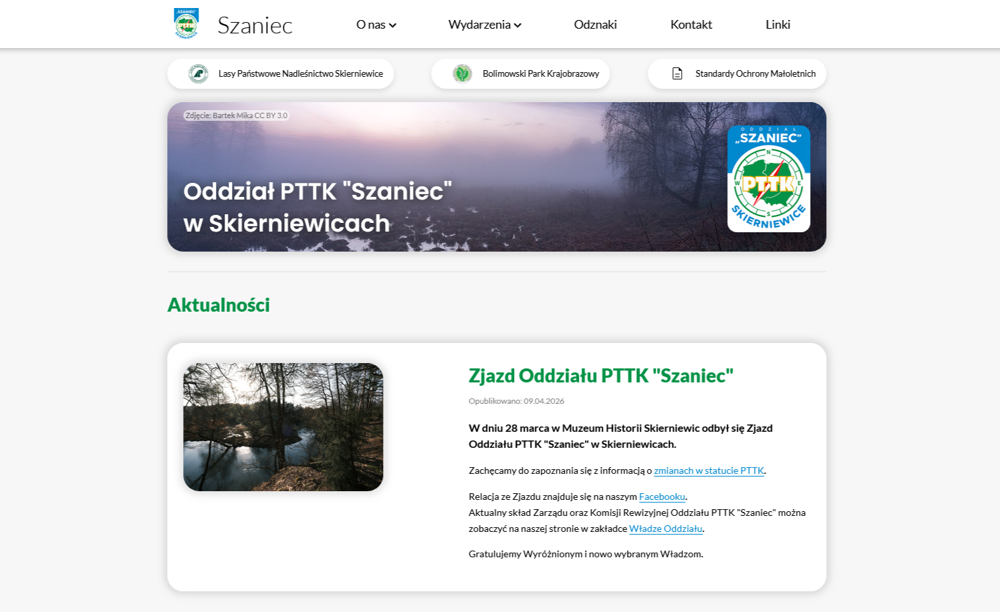
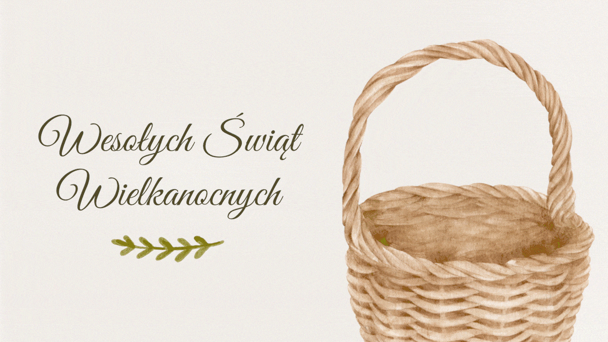

Strona internetowa Oddziału PTTK "Szaniec" w Skierniewicach

Opis
Prosta, funkcjonalna oraz nieobciążająca urządzenia i łącza internetowego strona internetowa. Projekt miał nawiązywać do klasycznego wyglądu poprzedniej strony, ale oferować zarówno świeże i nowoczesne podejście.
Na potrzeby tego projektu nauczyłem się HTML, CSS oraz technik tworzenia strony internetowej niemalże od zera. W tamtym momencie nie znałem jeszcze dobrze JavaScriptu oraz ograniczeń czystego HTML i CSS, dlatego też strona powstała bez wykorzystania frameworku.
Oprogramowanie i narzędzia
Figma | HTML | CSS | JavaScript
Opis
Minimalistyczny, atrakcyjny wizualnie i zgodny z identyfikacją wizualną informator miał dostarczyć wszelkich potrzebnych informacji na temat polityki i procedur compliance. Tekst informatora oraz podział na strony został przygotowany przez osobę odpowiedzialną za compliance.
Oprogramowanie i narzędzia
Adobe Illustrator
Opis
Kilkudziesięciostronicowy raport podsumowujący wyzwania oraz strategie zrównoważonego rozwoju firmy w 2024 roku.
Największym wyzwaniem w tym projekcie było dla mnie utrzymanie przejrzystego oraz atrakcyjnego wyglądu przy sporej ilości tekstu i informacji.
Oprogramowanie i narzędzia
Adobe InDesign
Opis
Niewielka broszura informacyjna w formie książeczki zawierająca podstawowe informacje na temat systemu pracy oraz działów produkcyjnych dla kandydatów i nowych pracowników.
Oprogramowanie i narzędzia
Adobe InDesign

Opis
Krótki film, który powstał na potrzeby postu na media społecznościowy, zmontowany z ujęć drona ukazujących jedną z lokalizacji firmy. Nagrania wykonane zostały przez firmę zewnętrzną. Montaż i animacja logo przygotowane przeze mnie.
Oprogramowanie i narzędzia
Adobe Premiere Pro | Adobe After Effects
Animacja do cyfrowej kartki Wielkanocnej

Opis
Projekt cyfrowej kartki Wielkanocnej na potrzeby udostępnienia w mediach społecznościowych oraz do wysłania klientom i kontrahentom.
Oprogramowanie i narzędzia
Adobe Premiere Pro | Adobe After Effects